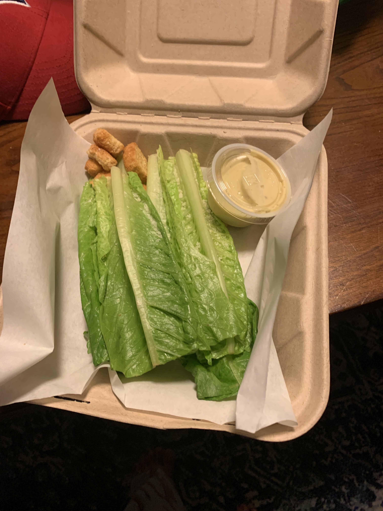

Back to Index
Deceasar Salad

Description
This dish is a simple one, yet so magnificent. Low prep/cook time with high reward.
Ingredients Needed
- Romaine Lettuce
- Croutons x4
- to-go cup of ceasar dressing (or your prefferred dressing..but then it won't really be a ceasar salad)
Preparing the Dish
- Wash a few pieces of romaine lettuce. No less than 3 but no more than 5 is preferred.
- Defrost 4 singular pieces of that yummy crunch known as crouton.
- Lay out your favorite piece of to-go dinnerwear and place accordingly.
*note. do not place croutons on top of lettuce or it will destroy the aesthetic and your dish wil not be
"gram"-worthy.
- Voila! Dinner is served.